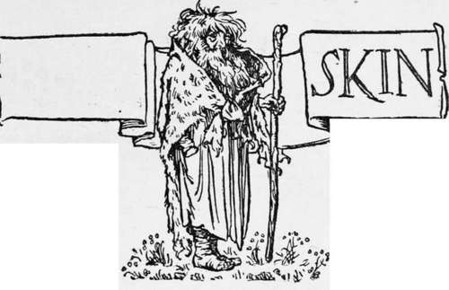

Bear Skin
Description
This section is from the book "Household Tales by Brothers Grimm", by Brothers Grimm. Also available from Amazon: Household Tales by Brothers Grimm.
Bear Skin
There was once a youth who enlisted as as oldier. He bore himself bravely, and was always seen to be foremost when the bullets were falling. Everything went well with him while the war lasted, but as soon as peace was proclaimed, he received his discharge, and was told by his captain that he might go where he pleased. He had no longer a home, for his parents were dead, so he went to his brothers, and begged that they would give him food and shelter until war broke out afresh. But the brothers were hard-hearted men, and said: " What do we want with you ? You are of no service to us; you must go and fight your own way as best you can." The soldier shouldered his rifle, which was all that was left to him, and went forth into the world. In time he came to a wide heath, on which there was nothing to be seen but a circle of trees. Full of sorrowful thoughts, he sat down under one of these and began meditating on the sadness of his lot. "I have no money," he said to himself, " and I have learnt no trade but that of fighting, and for this I am no longer wanted since peace was declared; I see nothing left for me to do but to starve." All at once he heard a sound as of the wind blowing, and looking up, he saw a stranger standing in front of him, dressed in a green coat. He was of stately appearance but had a nasty cloven-foot. " You have no need to tell me of what you are in want," said the stranger, " I know already ; both money and property I am prepared to give you, as much as you can make use of, spend what you will, but I must be first assured that you are a man without fear, for I do not wish to waste my money on a coward."
" A soldier and fear 1 " he answered, " when were they ever found together? You can put me to the proof." "Good," replied the stranger, "turn and look behind you." The soldier turned, and saw, trotting towards him, a great bear, growling as it came along. " Ho! ho! " cried he, " I will tickle your nose for you in such a way that you will not want to growl any more," and so saying, he aimed at the bear and shot it through the muzzle, and the animal fell over and did not move again. " I see that you are not wanting in courage," said the stranger, "but there is yet another condition that you will have to fulfil."
" I will consent to anything that does not endanger my salvation," answered the soldier, who was perfectly aware with whom he had to deal. "Otherwise I will have nothing to do with it."
" You shall judge for yourself," continued Greencoat; "during the next seven years you must neither wash, shave, comb your hair, or cut your nails, nor say a paternoster. I will give you a coat and cloak which you must wear the whole time. Should you die before the end of the seven years, you will be mine; but if you survive, you will be a free man, and a rich one, as long as you live." The soldier thought of the great poverty and distress in which he now found himself, and of how often he had before faced death, and he made up his mind to brave it once again, and so gave his consent to the proposed conditions. The Devil then drew off his coat, handed it to the soldier, and said, " When you are wearing this coat, you have only to thrust your hand into the pocket and you will find it full of gold."
He then went and cut off the bear's skin. "This," he said, "is to be your cloak and your bed; on this must you sleep and on no other bed must you lie, and on account of your apparel, you shall be called Bearskin." And with these words the Devil disappeared.
The soldier put on the green coat, thrust his hand at once into the pocket, and found he had not been deceived. Then he threw the bearskin over his shoulders and started again on his travels, but he now enjoyed himself, and denied himself nothing that did him good and his money harm.
In the first year his appearance was tolerable, but in the second year he already looked more like a monster than a man. His face was nearly covered with hair, his beard was like a piece of coarse felt, there were claws at the ends of his fingers, and cress might have been grown in the dirt that had collected on his face. Everyone who saw him fled before him ; he was still, however, able to find shelter for himself, for, in whatever place he stayed, he always gave largely to the poor, begging them in return to pray for him, that he might not die before the close of the seven years, and he always paid handsomely for everything he ordered.
It was in the course of the fourth year that he came to an inn, the landlord of which refused to take him in, or even to allow him a place in the stables, for he was afraid that even the horses would take fright.
he had before faced death, and he made up his mind to brave it once again, and so gave his consent to the proposed conditions. The Devil then drew off his coat, handed it to the soldier, and said, " When you are wearing this coat, you have only to thrust your hand into the pocket and you will find it full of gold."
He then went and cut off the bear's skin. "This," he said, "is to be your cloak and your bed; on this must you sleep and on no other bed must you lie, and on account of your apparel, you shall be called Bearskin." And with these words the Devil disappeared.
The soldier put on the green coat, thrust his hand at once into the pocket, and found he had not been deceived. Then he threw the bearskin over his shoulders and started again on his travels, but he now enjoyed himself, and denied himself nothing that did him good and his money harm.
In the first year his appearance was tolerable, but in the second year he already looked more like a monster than a man. His face was nearly covered with hair, his beard was like a piece of coarse felt, there were claws at the ends of his fingers, and cress might have been grown in the dirt that had collected on his face. Everyone who saw him fled before him ; he was still, however, able to find shelter for himself, for, in whatever place he stayed, he always gave largely to the poor, begging them in return to pray for him, that he might not die before the close of the seven years, and he always paid handsomely for everything he ordered.
Continue to:
Tags
fairy tales, children's stories, brothers grimm, household tales